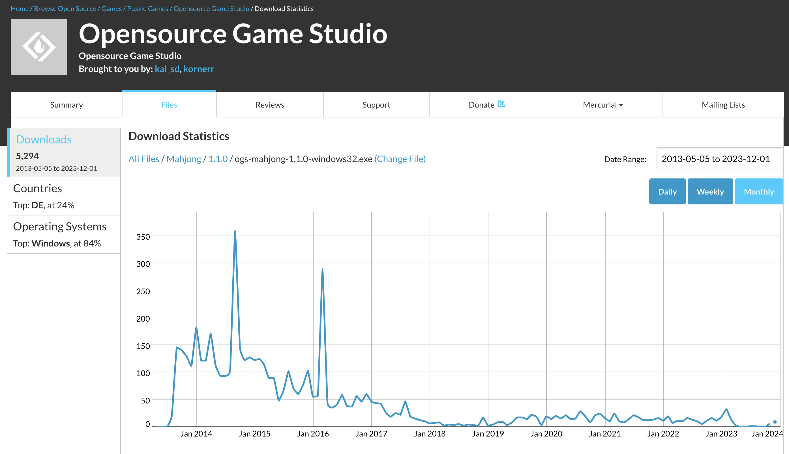

2023-12-25 00:00
In 2005 the Opensource Game Studio project started under the name of the Opensource RPG, because we wanted to create "the first competitive open free game". In 2011 right after releasing OGS Mahjong 0.7 we have already had the numbers that it would take us 540 years to create RPG.
In 2011 we had a dream that we as a team would grow, which could decrease 540 years to someting reasonable. However today in the end of 2023 it's clear we are unable to create RPG.
In 2013 we have released OGS Mahjong 1.1, the last completed product as part of the Opensource Game Studio project. Surprisingly OGS Mahjong still shows the signs of life, albeit its download chart resembles death agony:

Recently we have checked if OGS Mahjong 1.1 runs under Linux. Unfortunately, the game did run right out of the box. We had to create a few symlinks, and that worked. Thus, a bit of environment setup was required. That's a good result for a 10 year old software.
In 2019 we created PSKOV, our own static site generator to have site articles in a convenient Markdown format. Also, we did PSKOV in web to check web software durability. Today, 4 years from the initial release, web software durability hypothesis proves itself right. We're sure PSKOV of 2019 will be functioning in 2029 without a single change. However, we have to wait for 6 more years for that to come true.
OGS Mahjong and PSKOV prove that durability of 4-10 years is not a fantasy. The durability is essential to hobby projects, because hobbyists can't catch up to the always changing Operating Systems' requirements. We consider the Opensource Game Studio software has passed the durability check.
Our next step is to have portable code. That means the code is ~80% technically identical on each platform: Android, iOS, Linux, macOS, Web, Windows.
The portability is essential to hobby projects, because hobbyists don't have the ability to regularly validate their code on each platform. We are going to take portability to the new level for both OGS Mahjong and PSKOV.
Going to be interesting.
PS: Also, we now have Disqus comments here. Share and like ;)